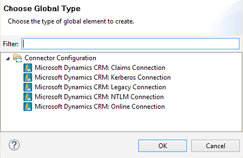
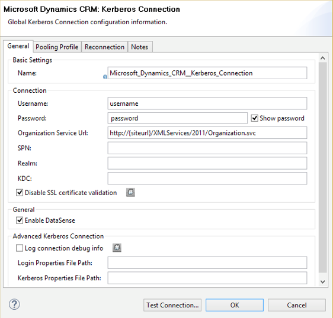
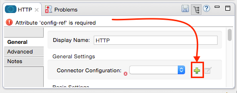
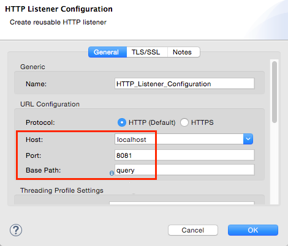
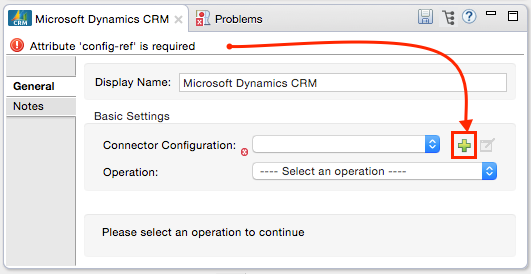
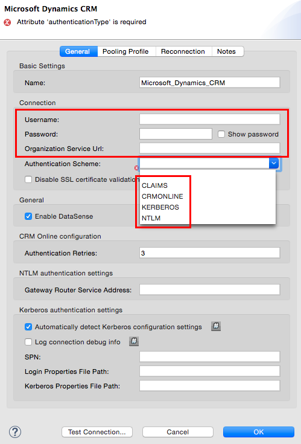
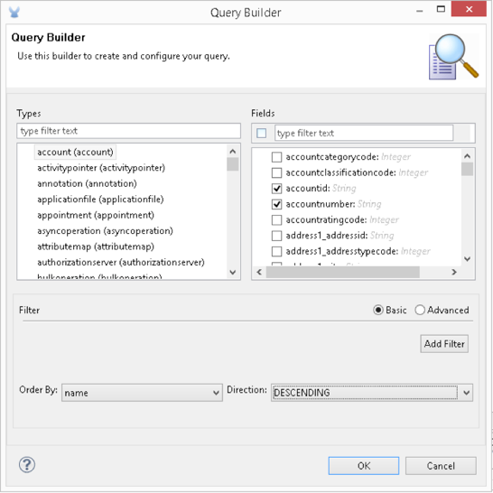

Microsoft Dynamics CRM Connector
Select
Latest version: 2.6.0
The Microsoft Dynamics Customer Relationship Management (CRM) connector lets you access Microsoft Dynamics CRM’s SOAP Organization Service. You can add this connector to an Anypoint Studio flow.
Release Notes: Microsoft Dynamics CRM Connector Release Notes
Samples: dynamics-crm-connector-samples.zip
Overview
This connector lets you perform the following operations:
-
Create, update, and delete records
-
Retrieve a single record or query multiple records
-
Associate and disassociate records
-
Execute a request message
This connector supports these Microsoft Dynamics CRM versions:
-
Microsoft Dynamics CRM 2015 (on-premise)
-
Microsoft Dynamics CRM 2013 (on-premise)
-
Microsoft Dynamics CRM 2011 (on-premise)
-
Microsoft Dynamics CRM Online
Configuring the connector requires minimal parameters except for advanced use:
-
Username and password for users granted access to CRM
-
Organization Service URL - usually in the format: + https://mulesoft03.api.crm.dynamics.com/XRMServices/2011/Organization.svc
Installing and Configuring
Install the Java Cryptography Extensions (JCE) package before installing the connector. Download JCE for Java 7 from Oracle’s Java 7 JCE Download site. Download JCE for Java 8 from Oracle’s Java 8 JCE Download site.
Use the instructions in Installing a Connector from Anypoint Exchange.
Configuring the Connector
Step 1: Create a New Mule Project
To configure:
-
In Anypoint Studio, click File > New > Mule Project.
-
Specify a Project Name and click Finish.
Step 2: Configure the Global Element
Configure the connector as a Microsoft Dynamics CRM instance:
-
Click the Global Elements tab and click Create.
-
In the Search field, type crm, click Microsoft Dynamics CRM, and click OK.
-
Click a connection strategy for authentication (for example, Microsoft Dynamics CRM: Kerberos Connection):
 -
Specify a Username and Password.
-
Specify a Organization Service URL for accessing the CRM system. Click OK.
For example:
https://{siteUrl}/XRMServices/2011/Organization.svc -
Click Test Connection to ensure that the connection works correctly.
-
After the connection succeeds, click OK.

Creating a Mule Flow
To create a flow:
-
Click the Message Flow tab.
-
In the Search field, type http, and drag the HTTP connector to the canvas.
-
In the Search field, type crm, and drag the Microsoft Dynamics CRM connector to the canvas next to the HTTP connector.
-
In the Search field, type json, and drag the Object to JSON transformer to the canvas next to the connector. You can use the default values in this transformer.
The flow appears as:
To configure the flow:
-
Double-click the HTTP connector and click the green plus + sign to the right of Connector Configuration:
 -
Set localhost, port 8081, and the Path to query:
 -
Double-click Microsoft Dynamics CRM.
-
Click the green plus symbol + to the right of Connector Configuration:
 -
Select the connection strategy for authenticating your CRM instance.
-
Specify your access to the CRM server: Username, Password, and Organization Service URL.
-
Click OK - See CRM Authentication for information on each authentication scheme.
 -
For Operation, click Retrieve multiple by query. Note: This option only appears if you were able to successfully contact the CRM server.
-
For Query Language, click DataSense Query Language. Note: The Query section only appears for a query Operation.
-
Click Query Builder.
-
In the Query Builder window:
-
In Types, click account.
-
In Fields, click accountid, accountnumber, and name.
-
In Order By, click name.
-
In Direction, click DESCENDING.
-
Click OK.

-
Running a Flow
-
In Package Explorer, right click your project’s name, and click Run As > Mule Application.
-
Check the console to see when the application starts. You should see a message such as this example if no errors occur:
++++++++++++++++++++++++++++++++++++++++++++++++++++++++++++ + Started app 'crm-demo' + ++++++++++++++++++++++++++++++++++++++++++++++++++++++++++++ -
Open a browser and visit
http://localhost:8081/queryThe list of accounts display in descending order by name and in JSON format (results vary according to your CRM instance). For example:
[{"name":"Alpine Ski House (sample)","accountnumber":"ABCO9M32","accountid":"f5a917b4-7e06-e411-82a5-6c3be5a8ad64"}, {"name":"Adventure Works (sample)","accountnumber":"ABC28UU7","accountid":"eba917b4-7e06-e411-82a5-6c3be5a8ad64"}]
CRM Authentication
Authentication Schemes
The Microsoft Dynamics CRM connector supports different authentication schemes based on the Microsoft Dynamics CRM that is accessed.
Supported authentication schemes for Microsoft Dynamics CRM on premise:
-
Windows Authentication - Kerberos
-
Windows Authentication – NTLM (requires Anypoint Gateway for Windows)
-
Claims-based Authentication
Supported authentication schemes for Microsoft Dynamics CRM online:
-
Live ID
-
Office 365
Advanced Kerberos Authentication
The preferred method of configuring the connector for Kerberos authentication is to leverage auto-configuration. The prerequisites for automatically detecting Kerberos configuration settings to work are:
-
Mule ESB server joined to the same domain as the CRM instance
-
AD Domain Controller is accessible from the Mule ESB server
In case the Kerberos configuration settings cannot be automatically detected, you can set the following parameters manually:
-
SPN: The Service Principal Name can usually be automatically discovered from the Organization Service’s WSDL. If the SPN cannot be discovered automatically, the value has to be set in the connector’s connection configuration property SPN. The SPN usually looks like host/SERVER-NAME.MYREALM.COM.
If the Organization Service WSDL reports a User Principal Name (UPN) instead of an SPN, then the CRM service is configured to run under a domain account. In this case, you must ensure that the domain admin has created an SPN under this service account in AD for the CRM hostname. In this case, the SPN is in the form http://crm.mycompany.com – note that the SPN is typically created to match a fully qualified DNS name that is used to access the CRM service.
-
Realm: The Domain that the user belongs to. Note that this value is case-sensitive and must be specified exactly as defined in Active Directory.
-
KDC: This is usually the Domain Controller (server name or IP).
If the environment is complex and requires further settings, manually create a Kerberos configuration file and reference the file in the connector’s connection configuration.
Sample Kerberos configuration file:
[libdefaults]
default_realm = MYREALM.COM
[realms]
MYREALM.COM = {
kdc = mydomaincontroller.myrealm.com
default_domain = MYREALM.COM
}
[domain_realm]
.myrealm.com = MYREALM.COM
myrealm.com = MYREALM.COMNote: The default_realm and default_domain values are case-sensitive. Specify these values exactly as defined in Active Directory. If you receive an error during Test Connection stating Message stream modified (41), the domain name is not correctly formed.
More information on how to create the Kerberos configuration file can be found at http://web.mit.edu/kerberos/krb5-devel/doc/admin/conf_files/krb5_conf.html.
To reference the Kerberos configuration file in a connector’s connection configuration:
-
Set the property Kerberos Properties File Path
-
Place the file in the class path (usually under src/main/resources) and set the value of the property to classpath:krb5.conf
Or:
Provide the full path to the file as in C:\kerberos\krb5.conf
You can tune the Kerberos login module (Krb5LoginModule) with scenario-specific configurations by defining a JAAS login configuration file.
Example JAAS login configuration file for the Kerberos login module:
Kerberos {
com.sun.security.auth.module.Krb5LoginModule required
debug=true
refreshKrb5Config=true;
};For more information on how to create the JAAS login configuration file for the Kerberos login module, see Class Krb5LoginModule.
To reference the JAAS login configuration file for the Kerberos login module in a connector’s connection configuration:
-
Set the property Login Properties File Path
-
Place the file in the class path (usually under
src/main/resources) and set the value of the property toclasspath:jaas.confOr:
Provide the full path to the file as in
C:\kerberos\jaas.conf
NTLM Authentication
For connecting to Microsoft Dynamics CRM with NTLM authentication, the connector routes requests through Anypoint Platform Gateway Service.
The Anypoint Platform Gateway Service runs as a Windows service. Install using the instructions in the Windows Gateway Service guide on a machine that is joined to the same domain as the Dynamics CRM instance that you want to authenticate against.
To install Windows Gateway Service:
-
Unzip the downloaded file and run the
.execontained within.For your protection, the executable is signed by MuleSoft Inc.
-
Follow the instructions to complete the installation. No further configuration is required.
After installing Anypoint Platform Gateway Service, configure the connector’s connection properties with the Username, Password, and the Organization Service URL.
Under NTLM authentication settings, set the Gateway Router Service Address to the address of the Anypoint Platform Gateway Service. This address by default is https://myserver:9333/router.
At this point, the connection should be successfully tested.
CRM Online Authentication
Microsoft Dynamics CRM Online, with Office365, allows federated authentication to known domains. Office365 provides an endpoint to discover the user parameters for federated authentication. In some cases, this discovery is not possible.
For these cases, there are optional connection configuration parameters:
-
Sts Metadata Url (optional): The STS’s metadata exchange URL. For ADFS, this is usually https://mycompany-sts.com/adfs/services/trust/mex.
-
Sts Username Port Qname (optional): The name of port that accepts username and password credentials as described in the STS’s metadata exchange URL. Specify this value as a
Qnamein the format{namespace}/port_name. For ADFS, this is usually:{http://schemas.microsoft.com/ws/2008/06/identity/securitytokenservice}UserNameWSTrustBinding_IWSTrust13Async}
Proxy
Configure the proxy that is used by the connector. This can be specified in the connector’s Global Element configuration, under the Proxy tab.
The value of the proxy address has to be in the format {hostname/IP}:{port}. For example, if the proxy is running in the same server under the port 8080: 127.0.0.1:8080 or localhost:8080.
Operations
Create Record
Creates a record for an entity.
The following table lists operation inputs:
| Property | Usage |
|---|---|
Logical Name |
The logical name of the entity that the record belongs to. |
Attributes |
A |
Output: A String containing the ID of the created record.
Create Multiple Records
Creates a set of multiple records for an entity. The following table details the operation inputs.
| Property | Usage |
|---|---|
Logical Name |
The logical name of the entity that the record will belong to. |
AttributesList |
A |
Output: BulkOperationResult<Map<String,Object>> object
See Data Considerations.
Retrieve Record
Retrieves a single record from an entity.
The following table details the operation inputs.
| Property | Usage |
|---|---|
Logical Name |
The logical name of the entity that the record belongs to. |
ID |
The ID of the record to update. |
Attributes |
A |
Output: Map<String, Object>
The map’s keys are the entity attribute names for the retrieved record.
Retrieve Multiple Records by Query
Retrieves a list of records. This operation leverages Mule’s DSQL for creating the query.
The following table details the operation inputs.
| Property | Usage |
|---|---|
Query |
DataSense Query Language: The DSQL to run. The query is translated by the connector to a Fetch XML. For more information, see DataSense Query Language. Native Query Language: The raw FetchXML to run. More information on how to create this queries can be found at http://msdn.microsoft.com/en-us/library/gg328332.aspx. |
Output: ProviderAwarePagingDelegate<Map<String, Object>, DynamicsCRMConnector>
In a Mule flow, this passes on to the next flow component a List<Map<String, Object>, where each Map<String, Object> element in the list contains a record of the queried entity. The map’s keys are the entity attribute names for the records.
Update Record
Updates an existing record in an entity.
The following table lists operation inputs:
| Property | Usage |
|---|---|
Logical Name |
The logical name of the entity that the record belongs to. |
ID |
The ID of the record to update. |
Attributes |
A |
Output: Void. This operation does not return a value.
Update Multiple Records
Updates several existing records in an entity.
The following table details the operation inputs.
| Property | Usage |
|---|---|
Logical Name |
The logical name of the entity that the record belongs to. |
AttributesList |
A |
Output: BulkOperationResult<Map<String,Object>> object
Delete Record
Deletes a record from an entity.
The following table lists operation inputs:
| Property | Usage |
|---|---|
Logical Name |
The logical name of the entity that the record belongs to. |
ID |
The ID of the record to delete. |
Output: Void. This operation does not return a value.
Delete Multiple Records
Deletes multiple records from an entity.
The following table details the operation inputs.
| Property | Usage |
|---|---|
Logical Name |
The logical name of the entity that the record belongs to. |
Ids |
The |
Output: BulkOperationResult<String> object
Associate Records
Creates a link between records.
The following table details the operation inputs:
| Property | Usage |
|---|---|
Logical Name |
The logical name of the entity that the record belongs to. |
ID |
The ID of the record to which the related records are associated. |
Schema Name |
The name of the relationship to create the link. |
Entity Role Is Referenced |
When associating records from the same entity (reflexive relationship), set this property as follows:
|
Related Entities |
A Each
|
Output: Void. This operation does not return a value.
Disassociate Records
Deletes a link between records.
The following table details the operation inputs.
| Property | Usage |
|---|---|
Logical Name |
The logical name of the entity that the record belongs to. |
ID |
The ID of the record from which the related records are disassociated. |
Schema Name |
The name of the relationship to delete the link. |
Entity Role Is Referenced |
When disassociating records from the same entity (reflexive relationship), set this property as follows:
|
Related Entities |
A Each
|
Output: Void. This operation does not return a value.
Execute
Executes a Dynamics CRM organization request and returns the response. The following table details the operation inputs.
| Property | Usage |
|---|---|
Request Name |
The request name to execute. |
Request Id |
(Optional) The ID of the request. |
Request Parameters |
The request parameters are taken from the message Payload. To set these parameters correctly for each operation, a data mapper is typically used before the connector is called. |
Output: A POJO containing the results of the method executed. The structure of each response is described in the operation’s metadata.
Supported Operations: The full set of the Microsoft Dynamics CRM organization request operations described at https://msdn.microsoft.com/en-us/library/gg309482.aspx.
Exceptions Handling
Exceptions when Connecting
If the connector fails to connect with the CRM instance for any reason, an exception of type ConnectionException is thrown. The exception message helps debugging the cause of the exception.
Exceptions in Operations
Each operation throws a different type of exception. This is useful when defining an exception handling policy.
The following table lists the exception types that are thrown for every operation.
| Operation | Exception Type |
|---|---|
Create |
IOrganizationServiceCreateOrganizationServiceFaultFaultFaultMessage |
Update |
IOrganizationServiceUpdateOrganizationServiceFaultFaultFaultMessage |
Delete |
IOrganizationServiceDeleteOrganizationServiceFaultFaultFaultMessage |
Retrieve |
IOrganizationServiceRetrieveOrganizationServiceFaultFaultFaultMessage |
Retrieve Multiple |
IOrganizationServiceRetrieveMultipleOrganizationServiceFaultFaultFaultMessage |
Associate |
IOrganizationServiceAssociateOrganizationServiceFaultFaultFaultMessage |
Disassociate |
IOrganizationServiceDisassociateOrganizationServiceFaultFaultFaultMessage |
Execute |
IOrganizationServiceExecuteOrganizationServiceFaultFaultFaultMessage |
Data Considerations
Entity Reference
Entity reference attributes are accessible as String values that match the pattern myattribute_referenceto_targetentity.
To avoid conflicts, don’t add fields to your CRM instance using this reserved naming scheme: referenceto[].
As an example, the Contact Entity Reference attribute TransactionCurrencyId is Lookup field that targets the entity transactioncurrency. The transactioncurrencyid of the transactioncurrency is accessible as a String in the attribute transactioncurrencyid_referenceto_transactioncurrency.
The Create and Update operations accept entity reference attributes. Following the example above, to create a Contact targeting a transactioncurrency, set the value of the attribute transactioncurrencyid_referenceto_transactioncurrency to the transactioncurrencyid of the record to reference.
The Retrieve Multiple Records operation also allows selecting and filtering of Entity Reference attributes. As an example for Contact, the following DataSense Query returns all the contact full names that where created by a particular systemuserid:
Select fullname From contact Where createdby_referenceto_systemuser =
'c7a58b13-df19-491c-a918-1bc26eaf6eb3'Party List
A Party List is typically found on email activities to represent the To, Bcc, and Cc attributes. This type of attribute is accessible as a list of Map<String, String> objects where each list item represents an Entity Reference.
As an example, the Email Party List attribute To is a list of Lookup objects that can target any of the following entities: Account, Contact, Lead, Queue, and SystemUser.
The To attribute is a List of Map<String, String> objects where each Map’s key is one of the following:
to_referenceto_account, to_referenceto_contact, to_referenceto_lead, to_referenceto_queue or to_referenceto_systemuser
For an email sent to an account and a contact, the To attribute is:
[{ to_referenceto_account: 40f5b94e-1cb6-45c1-9990-76fb7f038447}, { to_referenceto_contact: 3b7d2441-6fc7-48be-a965-a89e501ad5b3} ]Picklist
Picklist attributes are accessible as Integer values.
As an example, the Contact attribute familystatuscode is accessible as an Integer value.
Money
Money attributes are accessible as BigDecimal values.
As an example, the Contact attribute creditlimit is accessible as a BigDecimal value.
BulkOperationResult<T>
-
isSuccesful() returns a Boolean value. Is false if any of the results contains an error.
-
getItems() returns a list of the results. Each result has a correlation and respects the order of the record Created, Updated, or Deleted.
Each item has the following data:-
isSuccesful() is false if the operation is faulted.
-
getId() returns the ID of the created entity in create-multiple operation.
-
getException() returns the Exception from the backend fault.
-
getMessage() returns the message in case isSuccesful() is false.
-
Frequently Asked Questions
Which versions of Dynamics CRM are supported by this connector?
See Supported versions in the Overview section for the current list of supported CRM versions.
What authentication schemes are supported by the connector?
Options for authentication against on-premises CRM instances include Kerberos, Claims Authentication (ADFS), and NTLM (via the Anypoint platform gateway for Windows). For CRM Online, the standard CRM online authentication protocol is supported.
What parts of the CRM object model are accessible by the connector?
All out-of-box and custom entities are available via the connector, including primary entities and association entities.
Are DataSense and DataMapper supported by this connector?
Yes, all entities and entity attributes are exposed to Studio by the connector for use with DataMapper and DataSense.
What operations can I perform with the connector?
All standard create-read-update-delete operations are supported against all CRM entities. Additionally, queries for collections of objects can be written either in native FetchXML or Mule’s DSQL query language.
Are there any examples that show how to use the connector?
Yes, an example project for Anypoint Studio is available in dynamics-crm-connector-samples.zip.